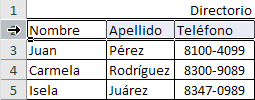
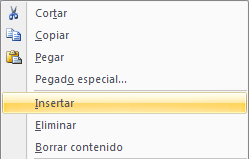
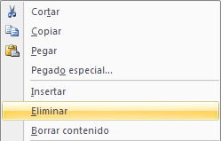

4.2.3 Seleccionar e insertar filas
Para seleccionar una sola fila existen dos maneras de hacerlo, estas formas son las siguientes:
| 1 | La primer manera es haciendo clic sobre el número de la fila a seleccionar.
 |
| 2 | La segunda consiste en ubicar el indicador de celda dentro de la fila que se desea seleccionar y presionar la tecla "Shift" + "Barra espaciadora" (Space Bar) |
Para seleccionar varias filas continuas en la hoja de cálculo, existen tres formas de realizarlo:
| 1 | Haga clic sobre el número de la fila a seleccionar. |
| 2 | Ubique el indicador de celda dentro de la fila que se desea seleccionar y presionar la tecla "Shift" + "Barra espaciadora" (Space Bar). Una vez ya estén seleccionadas las filas deseadas suelte el ratón (mouse). |
| 3 | La otra forma de hacerlo es con la tecla Shift y las flechas:
|
| 4 | Mantenga presionado el botón mientras mueve el cursor hacia el centro de la imagen. |
Las alternativas para insertar filas en el área de trabajo de una hoja de cálculo son varias aunque la más práctica es la siguiente:
| 1 | Seleccione la fila que se desea quede libre. |
| 2 | Haga clic derecho y seleccione la opción "Insertar" (Insert).
 |
| 3 | La fila se anexará con un número consecutivo a la que se tomó como libre. |
Para eliminar una fila el método más práctico es el siguiente:
| 1 | Seleccione la fila que se desea eliminar |
| 2 | Haga clic derecho y seleccione la opción "Eliminar" (Delete).
 |
| 3 | La fila se desplazará eliminándose por completo. |